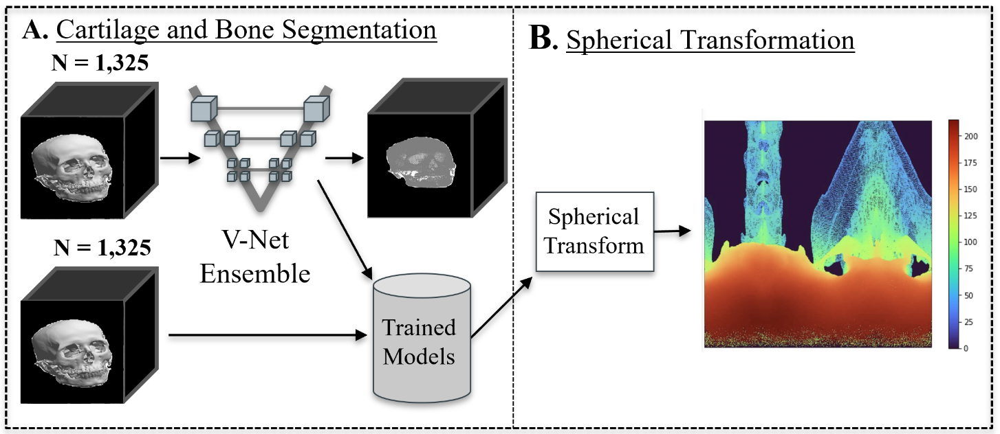

|
Danny Tran I'm an undergraduate Computer Science student at UC Berkeley where I had the pleasure of being advised by Professor Trevor Darrell and Dr. Amir Bar. |
{kind=link}
ResearchI'm interested in computer vision, robotics, and deep learning. I am primarily interested in enabling high level planning for robotics. Some of my work is highlighted below.
|

|
Navigation World Models
Amir Bar, Gaoyue Zhou, Danny Tran, Trevor Darrell, Yann LeCun Technical Report, 2025 project page / We present Navigation World Models. We plan trajectories by using a video world model, enabling planning, conterfactual reasoning, and action. |
|
|
EgoPet: Egomotion and Interaction Data from an Animal's Perspective
Amir Bar, Arya Bakhtiar, Danny Tran, Antonio Loquercio, Jathushan Rajasegaran, Yann LeCun, Amir Globerson, Trevor Darrell ECCV, 2024 project page / data / code We present EgoPet, a new egocentric video dataset of animals. We create a variety of tasks to learn from animals such as Visual Interaction Prediction, Locomotion Prediction, and Vision to Proprioception. |
Class Projects |

|
EgoPet Locomotion Prediction Text-Conditioned Extension
Spring 2024 CS280 is the graduate computer vision course at UC Berkeley. For my CS280 final project, I worked on a text-conditioned extension to the Locomotion Prediction task in my EgoPet paper. |
|
|
Efficient Mitigation of Bus Bunching through Setter-Based Curriculum Learning
Fall 2023 CS285 is the graduate Deep Reinforcement Learning course at UC Berkeley. For my CS285 final project, I worked on implementing various deep-reinforcement learning algorithms for learning a bus policy to avoid bus bunching. I explored the impact of Domain Randomization on training such a policy. |
|

|
Using Deep Learning to Distinguish Facial Bone Structure of Genders
Fall 2022 CS182 is the Deep Learning course at UC Berkeley. Designed a deep neural network for classifying gender from CT scans, achieving an accuracy of approximately 80%. Implemented and analyzed Grad-Cam visualizations in order to determine facial features. |
Miscellanea |

|
Academic Intern for CS61B
January 2022 - May 2022 As an academic intern for CS61B, the Data Structures and Algorithms course at UC Berkeley, I aided students during lab and office hours on various projects and homework. Created lab slides and code demonstrations which I presented in lab. |
|
Website template taken from Jon Barron at source code. Thank you! |